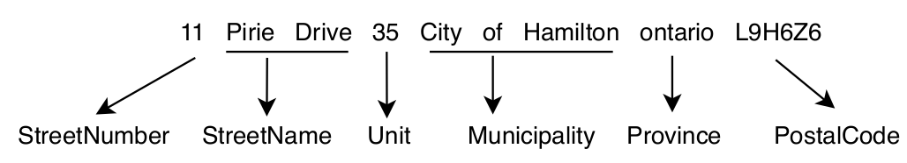

Warning
You are reading the documentation of the development version of deepparse (0.11.0.dev1+26382cd), built from the
dev branch. It may describe unreleased features. See the stable documentation
for the latest release.
Retrain an Address Parser for Single Country Uses
Note
See the notebook here
Run in Google Colab
from deepparse import download_worldwide_addresses_sample
from deepparse.dataset_container import ListDatasetContainer
from deepparse.parser import AddressParser
from poutyne import set_seeds
seed = 42
set_seeds(seed)
In this example, we will retrain a pre-trained model to maximize its performance for specific countries (e.g. the UK or Canada).
Retrain a Model
First, to retrain our supervised model, we need parsed address example, as shown in the following figure. Fortunately, we have access to a public dataset of such parsed examples, the worldwide-addresses dataset on the HuggingFace Hub (one configuration per country).

For our example, we will focus on UK addresses since we want to parse addresses only from the UK.
So let’s download a sample of the UK (gb) addresses directly from the HuggingFace Hub using the Deepparse
download_worldwide_addresses_sample function. It only reads the needed part of the dataset and maps its tags to
the Deepparse tags (Suburb and District become Municipality, and the words tagged County or
Country are removed from the addresses).
addresses = download_worldwide_addresses_sample(country_code="gb", num_samples=12000)
Now, let’s split our sample into train (10,000 addresses) and test (2,000 addresses) datasets to retrain our parser model.
training_container = ListDatasetContainer(addresses[:10000])
test_container = ListDatasetContainer(addresses[10000:])
We will use the FastText one for our base pre-trained model since it is faster to retrain.
address_parser = AddressParser(model_type="fasttext", device=0)
But first, let’s see what the performance is before retraining.
address_parser.test(test_container, batch_size=256)
_ = address_parser.retrain(
training_container,
train_ratio=0.8,
epochs=1,
batch_size=32,
num_workers=2,
learning_rate=0.001,
logging_path="./uk_retrain",
name_of_the_retrain_parser="UKParser",
)
address_parser.test(test_container, batch_size=256)
To further improve performance, we could train for longer, increase the training dataset size
(using a larger num_samples, or the complete gb configuration of the dataset), or rework the Seq2Seq
hidden sizes. See the
retrain interface documentation
for all the training parameters.